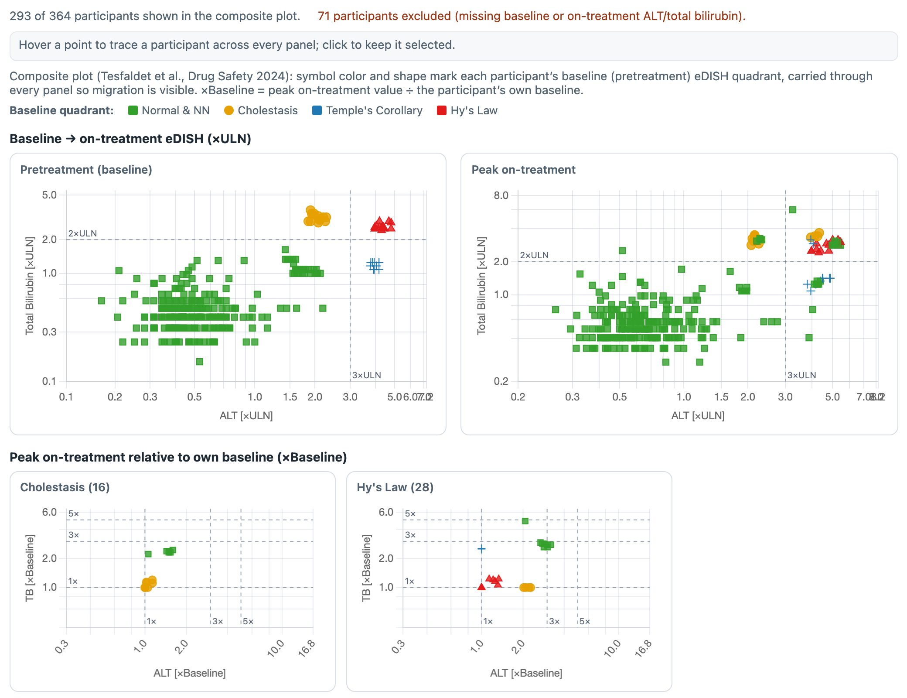
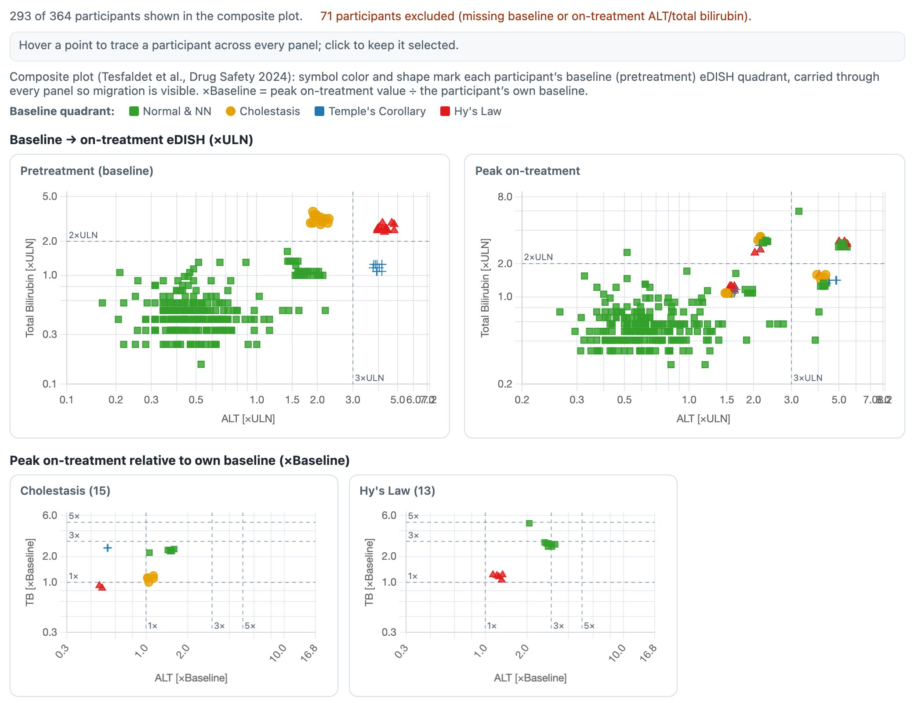
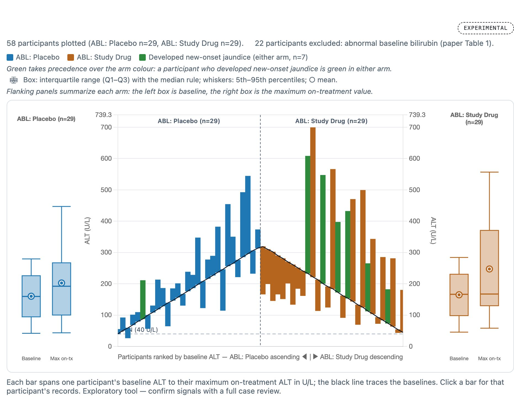
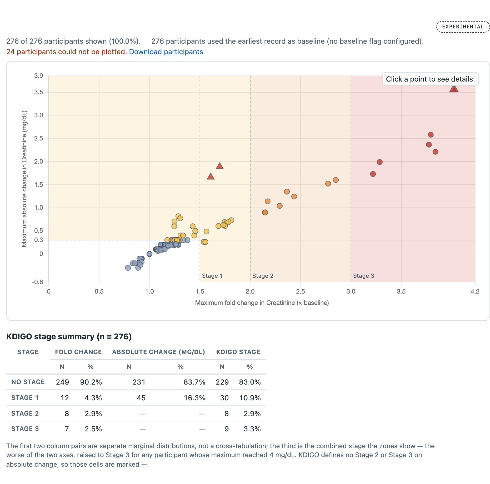
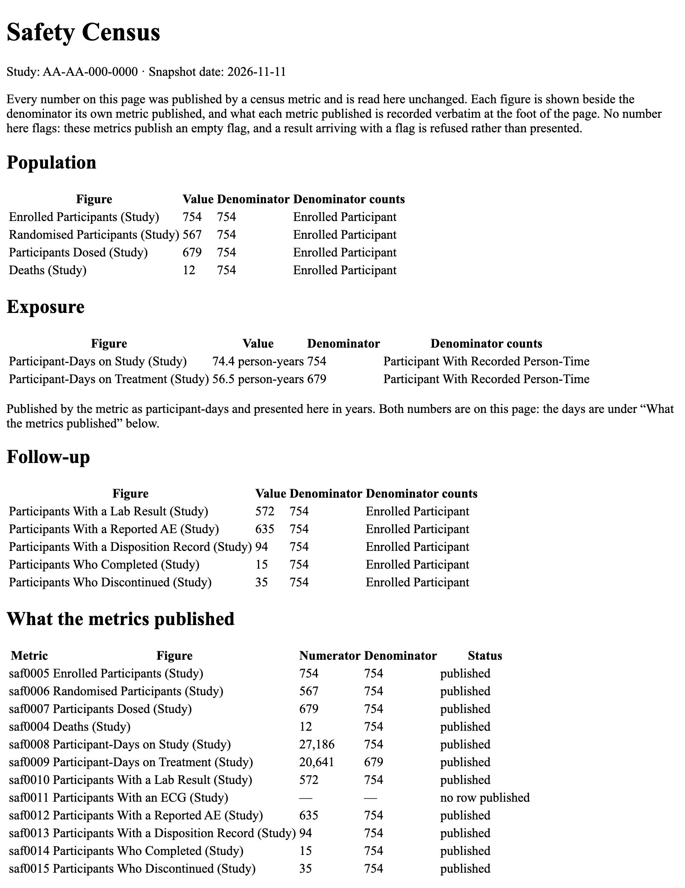
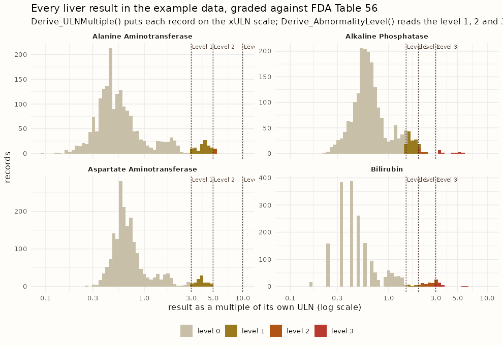
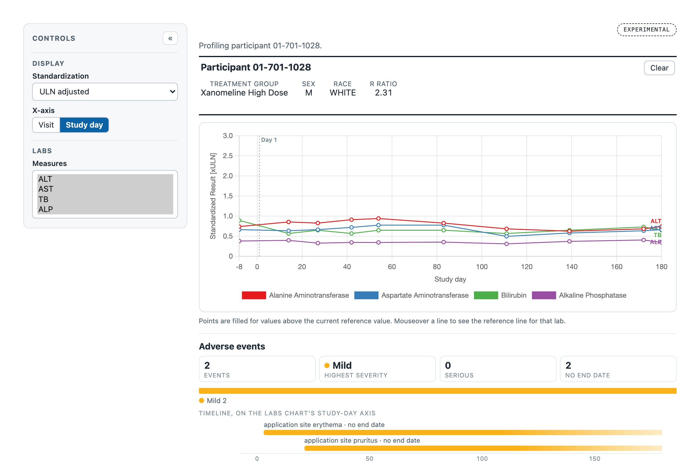
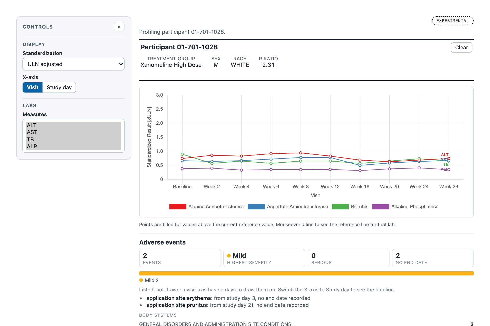

gsm.safety release review 2026-09-12 updated 2026-11-11
One release carrying everything gsm.safety has merged since v1.1.0 in July. Two clinical corrections lead it: the composite liver view no longer reads a participant's own baseline as an on-treatment peak, and the safety overview reports twelve deaths where it said two. Behind them, four chart widgets so that every renderer safety.viz exports is reachable from R, a visit or study-day axis chosen from R, and the FDA safety guide's laboratory thresholds as package data with the first functions that apply them. The page is in five parts and ends with the full change notes.
deaths 2 → 12 of 754
23 eDISH peaks fall, 15 leave Hy's Law
widgets 13 of 13 renderers
bundle safety.viz 1.12.0
reference rows 46 + 80
candidate gsm.safety v1.2.0-RC1, dev → main
Updated 2026-11-11 · what changed on this page
Why one release · @jwildfire, 2026-09-12
Three candidates had been opened for this work, one stacked on the next: v1.2.0 for the widget parity, v1.3.0 for the census, v1.5.0 for the FDA data, with the last two widgets between them under a version that never got a candidate. On 12 September he decided: "Let's go with option B, but squash it all into a single release: PR/Release notes/Demo for a single v1.2." This page is that demo; the release notes are one section; the candidate is one pull request from dev.
gsm.safety's composite liver view had been reading some participants' own baseline as if it were an on-treatment peak. This part swaps the chart library under every widget from safety.viz v1.4.0, which gsm.safety v1.1.0 ships, to v1.12.0, where the rule is corrected. It adds two charts that had no R binding at all and puts a parity guard in CI. The comparison below was run again on 2026-11-11, on the example data this release ships: both bundles, the same data, the same widget code.
Both captures below come from one report file, built from the release's own hep-explorer workflow. The widget code, the settings and all 57,929 rows of the example data are byte-identical between them; the two copies differ only in which safety.viz.js they load. Read the panel titles in the lower row: each counts the participants whose on-treatment peak falls in that quadrant.


What the difference is
ABLFL, which the release's workflow names), or else day zero, or else the earliest. On-treatment is every other record after both day zero and the baseline's own day.| Composite eDISH view | safety.viz 1.4.0 | safety.viz 1.12.0 |
|---|---|---|
| Participants plotted | 293 | 293 |
| Participants excluded | 71 | 71 |
| On-treatment: Normal & NN | 233 | 246 |
| On-treatment: Hy's Law | 28 | 13 |
| On-treatment: Temple's Corollary | 16 | 19 |
| On-treatment: Cholestasis | 16 | 15 |
No participant enters or leaves the plot. Twenty-three change quadrant, all of them in the synthetic chronic-liver-disease cohort, and every move is downward: 15 leave Hy's Law, 5 leave Cholestasis and 3 leave Temple's Corollary. Every other participant's plotted position is identical between the two bundles.
What the first version of this page measured, and why it changed
DY) and the baseline flag. On them the old rule misreads 23 participants instead of 11, and 23 quadrants move instead of none. The August figures stay published on the August demo page.Why it matters
eDISH is read by eye. A point that sits at its own baseline is indistinguishable from a point that genuinely peaked there, and a participant who improved on treatment could not be drawn below the diagonal at all. On this data, 15 participants would be drawn in Hy's Law by the old rule only because their baseline, taken on day 1, was their highest value.
A baseline on the day of first dose is ordinary in ADaM data. The same corrected rule feeds the migration view and the ALT waterfall. The plain eDISH scatter uses a different per-record path and is unaffected.
Try it
These are every ALT and bilirubin record of CLD-9010, read out of the package's own ExampleData("adbds") on 2026-11-11, nothing else selected or filtered. CLD-9010 is in the synthetic chronic-liver-disease cohort that safety.viz built for the composite view (safety.viz data sources).
| Test | Visit | Study day | Result | ULN | ×ULN | Old rule | New rule |
|---|---|---|---|---|---|---|---|
| ALT | Baseline | 1 | 168 | 40 | 4.2000 | baseline, and counted as on-treatment | baseline |
| ALT | Week 4 | 29 | 57 | 40 | 1.4250 | on-treatment | on-treatment |
| ALT | Week 8 | 57 | 62 | 40 | 1.5500 | on-treatment | on-treatment |
| ALT | Week 12 | 85 | 57 | 40 | 1.4250 | on-treatment | on-treatment |
| Bilirubin | Baseline | 1 | 3.1 | 1.2 | 2.5833 | baseline, and counted as on-treatment | baseline |
| Bilirubin | Week 4 | 29 | 1.4 | 1.2 | 1.1667 | on-treatment | on-treatment |
| Bilirubin | Week 8 | 57 | 1.5 | 1.2 | 1.2500 | on-treatment | on-treatment |
| Bilirubin | Week 12 | 85 | 1.4 | 1.2 | 1.1667 | on-treatment | on-treatment |
There is no day-zero record, so both rules take the day-1 record as the baseline. Because day 1 is after day zero, the old rule also kept that record in the on-treatment set, and reported the peaks as 4.2 ×ULN for ALT and 2.58 ×ULN for bilirubin: the participant's own starting values, and a Hy's Law point. The on-treatment peaks are 1.55 and 1.25. This participant improved on treatment.
How far this reaches
Read out of each bundle's own reduction, the participants the composite view hands to its charts, for the same 364 participants. Values are peak on-treatment, in multiples of the upper limit of normal.
| Participant | Peak ALT was | is now | Peak bilirubin was | is now | On-treatment quadrant |
|---|---|---|---|---|---|
| CLD-9010 | 4.2000 | 1.5500 | 2.5833 | 1.2500 | Hy's Law → Normal & NN |
| CLD-9011 | 4.3000 | 1.5750 | 2.4167 | 1.2500 | Hy's Law → Normal & NN |
| CLD-9012 | 4.4000 | 1.6250 | 2.5000 | 1.2500 | Hy's Law → Normal & NN |
| CLD-9013 | 2.2500 | 1.5750 | 2.9167 | 1.0833 | Cholestasis → Normal & NN |
| CLD-9014 | 2.2000 | 1.5250 | 3.1667 | 1.0833 | Cholestasis → Normal & NN |
| CLD-9015 | 2.1250 | 1.5000 | 3.0833 | 1.0833 | Cholestasis → Normal & NN |
| CLD-9016 | 3.8000 | 1.6250 | 1.2500 | 1.0833 | Temple's Corollary → Normal & NN |
| CLD-9017 | 3.9500 | 1.5750 | 1.0833 | 1.0833 | Temple's Corollary → Normal & NN |
| CLD-9018 | 4.6750 | 2.1500 | 2.9167 | 2.6667 | Hy's Law → Cholestasis |
| CLD-9019 | 4.2000 | 2.0250 | 2.9167 | 2.5000 | Hy's Law → Cholestasis |
| CLD-9020 | 4.8000 | 4.0500 | 2.5000 | 1.5833 | Hy's Law → Temple's Corollary |
| CLD-9021 | 4.8000 | 4.2250 | 2.8333 | 1.5000 | Hy's Law → Temple's Corollary |
| CLD-9022 | 3.9500 | 3.9500 | 3.3333 | 1.5833 | Hy's Law → Temple's Corollary |
| CLD-9023 | 4.1250 | 4.1250 | 3.4167 | 1.4167 | Hy's Law → Temple's Corollary |
| CLD-9024 | 3.9500 | 2.1000 | 3.1667 | 3.1667 | Hy's Law → Cholestasis |
| CLD-9047 | 3.9750 | 1.6250 | 2.5000 | 1.1667 | Hy's Law → Normal & NN |
| CLD-9048 | 3.9750 | 1.5250 | 2.5000 | 1.1667 | Hy's Law → Normal & NN |
| CLD-9049 | 2.0750 | 1.4750 | 2.8333 | 1.0833 | Cholestasis → Normal & NN |
| CLD-9050 | 2.2750 | 1.5000 | 3.1667 | 1.0833 | Cholestasis → Normal & NN |
| CLD-9051 | 4.1750 | 1.6500 | 1.2500 | 1.1667 | Temple's Corollary → Normal & NN |
| CLD-9052 | 4.3250 | 4.3250 | 3.6667 | 1.5833 | Hy's Law → Temple's Corollary |
| CLD-9053 | 4.2500 | 4.2500 | 3.4167 | 1.5000 | Hy's Law → Temple's Corollary |
| CLD-9054 | 4.0500 | 2.1250 | 2.9167 | 2.9167 | Hy's Law → Cholestasis |
Twenty-three peaks move and not one of them rises. Six participants keep one of their two peaks, because a later value in that test did outrank the baseline: CLD-9022, for one, really did reach 3.95 ×ULN for ALT on treatment, but its bilirubin peak of 3.33 was its baseline, so it moves from Hy's Law to Temple's Corollary.
What is being shipped is what was measured
d10d73a0… (SHA-256), and the bundle the public safety.viz demo serves today hashes to the same value. Checked by downloading it on 2026-11-11.DESCRIPTION declares the wrapped library as Config/safetyviz/version: 1.12.0.Both existed in the JavaScript library and had no R binding. Both captures below were produced on 2026-11-11 by running the package's own report workflows with the release's code, the v1.12.0 bundle and the release's example data. Every count matches what the first version of this page measured on 22 August with the 1.7.0 bundle.

Widget_HepWaterfall() on the synthetic abnormal-baseline cohort: 58 of 80 participants plotted, 22 excluded for abnormal baseline bilirubin per the source paper's Table 1, seven marked as developing new-onset jaundice. The chart exists for trials where a normal-baseline eDISH cannot be formed at all. It takes no Visit | Study day toggle; its studyday_col is now DY instead of VISITNUM, and its workflow reads the baseline from the baseline flag.
Widget_NepExplorer(): 276 participants staged, 24 that could not be plotted named rather than dropped silently, and a summary table that says in words that its first two column pairs are separate marginal distributions rather than a cross-tabulation. It notes that it used each participant's earliest record as baseline, because its workflow names no baseline flag; on this data the earliest creatinine record is the flagged one for all 300 participants who have one, so the figures are the same either way.Both are marked experimental upstream, and the widgets carry that through
The waterfall is labelled "Experimental: a new chart, drawn from a 2025 paper", and the nephrotoxicity explorer "Experimental until its kidney-injury staging has had a clinical review". That is the chart library's own labelling, visible on each capture, and wrapping them in R does not promote them. When this page was first written the waterfall carried a prototype banner; the label moved upstream in the releases since.
The part that outlives the release
A check now runs weekly against the latest safety.viz release: a renderer with no widget fails it unless a deferral names a filed requirement. A deferral that cites nothing is refused, so falling behind quietly stops being available.
When this part was first measured, two renderers were still unwrapped, the participant profile and the time-to-event chart, because both need two datasets where the widget contract carried one. Part 3 of this page is where they arrive, and the deferral list is empty in this release.
Try them
A safety overview leads with denominators: how many participants, how many dosed, how many died. gsm.safety computed those inside one function, from whatever columns it was handed, and got several of them wrong. This part replaces every one with a metric that publishes its own numerator, its own denominator and a record of where the figure came from, adds the report that reads them, and keeps SafetyCensus() by name with its arithmetic moved out. Both versions were run for this update on 2026-11-11, on the same study, in the same session: the released v1.1.0 and the candidate.
On the ecosystem's bundled study, the safety overview reports two deaths. Twelve enrolled participants have a death recorded. The old count never opened the death domain at all: it matched the text of a discontinuation reason and counted whoever it found, enrolled or not.
| Where a death is recorded | Participants | Of them enrolled |
|---|---|---|
| The death domain | 12 | 11 |
| Discontinuation reason reads "Death" | 2 | 1 |
| Named by both | 0 | 0 |
| Union | 14 | 12 |
One more catch on gsm.core 1.3.2: the mapping's spelling of "death"
DEATH; this study writes Death. So the mapped death domain stopped carrying the participants who discontinued for death.The correction is two to twelve, and the study has moved twice
| Figure | gsm.core 1.2.0 | gsm.core 1.3.1 | gsm.core 1.3.2 |
|---|---|---|---|
| Enrolled | 760 | 762 | 754 |
| Death domain | 12 | 12 | 12 |
| Discontinuation reason reads "Death" | 1 | 4 | 2 |
| Union, all participants | 13 | 16 | 14 |
| The published death count | 12 | 13 | 12 |
| What v1.1.0's census reports | 1 | 4 | 2 |
This is the trap the release exists to close: the same study name, three different studies. The suite pins its exact counts to the gsm.core version they were measured on and skips them, naming both numbers, on any other, so re-qualifying stays a deliberate act by a person.
Both runs call SafetyCensus() on the same mapped domains from the same study, minutes apart: the released v1.1.0 first, then this release's. Nothing below is copied from the release notes or the qualification records; those were read afterwards, to check this run against them.
| Figure on the safety overview | Before, as v1.1.0 computes it | This release | What the old number was doing |
|---|---|---|---|
| Enrolled participants | 754 | 754 | unchanged |
| Randomised to an arm | blank | 567 | read a treatment-arm column no standard domain carries |
| Received study drug | 599 | 679 | inferred dosing from time on treatment exceeding zero |
| Deaths | 2 | 12 | matched a discontinuation reason, never read the death domain |
| Person-years on study | 74.4 | 74.4 | unchanged; now of 754 |
| Person-years on treatment | 56.5 | 56.5 | unchanged; now of 679 |
| Participants with a lab result | 572 | 572 | unchanged |
| Participants with an ECG | blank, of 754 | absent, and it says so | published a blank where the domain is missing |
| Participants with a reported AE | 635 | 635 | unchanged |
| Participants with a disposition record | 116 | 94 | counted every identifier in the domain, enrolled or not |
| Completed | 21 | 15 | counted the same way, and inside a table rather than as a figure |
| Discontinued | 36, across three rows | 35 | split by a free-text reason: 22 lost to follow-up, 12 withdrew consent, 2 with no reason |
| Median days on treatment | 31 | no longer published | wants an averaging step no metric performs yet |
| Ongoing / Not in the disposition domain | 57 / 638 | no longer published | read out of a completion flag nobody filled in, and a subtraction |
Two figures left the page rather than moving, and they are named rather than dropped
New on this study: dosing and enrolment differ, and not everyone has time on treatment
Every figure that is published was measured twice, by routes that share no code, and the pair has to agree or the script exits non-zero. Run either yourself from the branch:
# the records read directly with base R, against the pipeline, figure by figure Rscript tools/qualify-census-metrics.R Rscript tools/qualify-death-count.R # AGREE - every figure measured twice, and saf0011 stops rather than publishing a zero. # AGREE - 12 participants, of 754 enrolled.
Both were run for this update on 2026-11-11, on gsm.core 1.3.2 and gsm.mapping 1.2.0, and both agreed. Every figure measured matches what inst/qualification/ records: the eleven figures in the metrics record and the death record's counts.
One report, reading what the metrics published and computing nothing of its own. Rendered for this update from the release candidate's code by running the whole pipeline: the standard mapping, the eleven census metrics with a domain on this study, the reporting model, then the report workflow.

The page carries no flag column and no cut-point. These metrics declare no threshold and publish an empty flag, so a census figure cannot move a site's risk score, and a result arriving with a flag is refused rather than presented.
Why it matters
A figure that is wrong is now wrong in exactly one place. Before, the same count could be produced by a function and by a metric and the two could disagree without anything noticing. Now the function runs the metrics and reads what they published, so there is one counting lane and the page is a reader of it.
The test that proves it is not the one that checks the numbers. A structural check reads the function's body and every helper it calls, and fails if an arithmetic operator or an aggregating function appears in any of them. A rebuild that left the counting in place and put a workflow beside it would pass an arithmetic test by accident; it cannot pass that one.
Try it
A zero means measured and found none. A blank means the reader has to guess. Both were being published where the honest answer is that nothing was collected. Run for this update: the same call, the same study, with the death domain withheld.
# the death domain supplied Deaths 12 of 754 # the death domain withheld; the same call, everything else identical Deaths NA # and it says so, rather than leaving the reader to notice: Warning: No domain was supplied for Deaths (Study) (Mapped_Death); Participants With an ECG (Study) (Mapped_EG). Those figures are absent rather than zero.
Three states, kept apart, and checked in the strongest form available
On a study that maps no death domain, the death figure now reads as not collected instead of reading a discontinuation reason. That is correct, and it is also a visible change: the demo study's deaths and randomised tiles will read as not collected until its mapping phase adds those two domains.
The two renderers part 1 left on the deferral list ship here: the Kaplan-Meier time-to-event display and the participant profile. Both were held back by the same thing, and it was never the JavaScript: each needs a second data frame, and the widget contract carried one. The contract is now general. A widget reads the datasets its module's data contract names rather than assuming there is one, and the eleven existing widgets return byte-for-byte the payload they returned before. The deferral list in .github/parity-allowlist.yaml is empty, and a test asserts it equal to the suite's own list so the two can no longer disagree.
What each widget takes and draws, from the release notes and the merged pull request (gsm.safety#72, closing gsm.safety#71).
Widget_TimeToEvent(dfResults, dfPopulation, ...)Widget_ParticipantProfile(dfResults, chrParticipants, dfAE, ...)chrParticipants the profile waits for a selection a static report never sends.ExampleData("adsl")Proven by what they painted, not by a file existing
A widget that loads nothing looks exactly like one that works: a binding that constructs its renderer and never hands it data raises no console error, still emits its element, still ships the bundle and still carries every data value in the page. Both widgets were opened in headless Chromium when the work landed on 27 August, with the 1.7.0 bundle, and measured: 95,478 painted pixels for the curves and 19,717 for the profile, against 0 for a deliberately broken control that no assertion in the suite could tell apart from the real one. Those pixel counts were not measured again for this update. A new test now asserts that every binding both constructs and feeds its module, proven red with the feed call removed and green with it restored, and it runs on every change.
Two things this part settles that were open
profileRail on its public object, and the profile-enabled lab widgets already shipped in part 1 (Widget_HepExplorer(), Widget_Histogram() and Widget_OutlierExplorer() mount the rail from their profile setting). The standalone surface was the only real gap, and it is what this part adds.pkgdown-all, test-coverage, qcthat and workflow-template-check had failed every run since with zero jobs and raised no check run, and the release workflow failed the same way on v1.1.0, which published with no artifacts. Every workflow file is now the current upstream template (gsm.safety#73), so this release publishes its artifacts and its pull request shows every check.Marked experimental, on purpose
When @jwildfire approved safety.viz v1.7.0 he kept its time-to-event chart marked experimental until an external review confirms the Kaplan-Meier implementation. A chart marked experimental in the library and unmarked in its R wrapper would be the same wrong-confidence problem on a different surface, so the R widget carries the marking too until that review completes (the un-marking is filed as obot.roadmap#182).
What this page cannot show
No capture was made for the time-to-event widget, and the package's documentation site rebuilds only when the release is tagged, so the two widgets' reference and gallery pages publish with the tag rather than before it. The safety.viz twins below run the same bundle on the same demo data and draw what the widgets draw. The participant profile is captured in part 5.
Try it
pak::pak("jwildfire/gsm.safety@dev"), then run Widget_TimeToEvent(ExampleData("adae"), ExampleData("adsl")).dev and read that it is empty, and why.The FDA's Standard Safety Tables and Figures guide is mostly rules rather than drawings: three levels of laboratory abnormality, values so extreme they are treated as errors, results read as multiples of the upper limit of normal. Nothing in R carried those rules. This part is the foundation the static figures will stand on: the guide's appendix tables as package data, the first three functions that apply them to a lab table and hand the table back with the answers added, a requirement matrix that keys every one of the guide's 22 figures, and a column-by-column check of what the demo data can draw. Every number was produced from dev on 2026-09-11; the row counts and the grading table were run again on the release candidate on 2026-11-11 and did not move.
Appendix Tables 56 and 57 give the level 1, 2 and 3 abnormality thresholds the guide counts outliers against; Tables 58 to 60 give the values beyond which a result is treated as a laboratory or recording error and left out of the mean-change figures. They existed only as a PDF. They are now two data frames, transcribed row for row, with the printed criterion kept beside the parsed number and the guide page on every row.
| Guide table | Page | Printed rows | Dataset rows |
|---|---|---|---|
| Table 56, abnormality levels, chemistry | 119 to 120 | 33 | 33 |
| Table 57, abnormality levels, hematology | 121 | 13 | 13 |
FDA_AbnormalityLevels | 46 | 46 | |
| Table 58, extreme values, chemistry | 122 to 123 | 26 | 52 |
| Table 59, extreme values, hematology | 123 | 9 | 18 |
| Table 60, extreme values, vital signs | 124 | 5 | 10 |
FDA_ExtremeValues | 40 parameters | 80 |
The extreme-value table is long: every parameter appears twice, once in US-conventional units and once in SI, because the guide prints both and the data decide which one applies. The example data are mostly SI with bilirubin in both unit systems, which is exactly the case that would go wrong with one column.
> subset(FDA_AbnormalityLevels, Panel == "Liver Biochemistry", + select = c(Parameter, Direction, Basis, Operator, Level1, Level2, Level3, GuidePage)) Parameter Direction Basis Operator Level1 Level2 Level3 GuidePage Alkaline phosphatase high uln_multiple > 1.5 2.0 3 120 Alanine Aminotransferase high uln_multiple > 3.0 5.0 10 120 Aspartate Aminotransferase high uln_multiple > 3.0 5.0 10 120 Total Bilirubin high uln_multiple > 1.5 2.0 3 120 > subset(FDA_ExtremeValues, Parameter == "Glucose", select = c(Specimen, UnitSystem, Unit, Low, High)) Specimen UnitSystem Unit Low High plasma US mg/dL 10.0 2700 plasma SI mmol/L 0.6 150
Where the transcription had to read, it says so on the row
The hemoglobin level 1 criteria are printed as ranges (12.5 to 13.5 g/dL for men); because the levels are cumulative the row stores the upper bound and keeps the printed text beside it. The platelet unit is kept as the guide prints it although the thresholds read as cells per microlitre. Three hematology thresholds printed without a comparator are read as greater-than like the rest of their table. Each of these is a Note on its row, and the hand-checked CSVs and the build script are in data-raw/, so a correction is one edit in one place.
Every later phase reads these two tables: the DILI plots for their 2x and 3x cuts, the outlier tables for their three levels, the mean-change figures for what to exclude. Transcribing them once, with tests, is what stops each figure carrying its own copy of the FDA's numbers.
Try it
pak::pak("jwildfire/gsm.safety@dev").data(FDA_AbnormalityLevels); data(FDA_ExtremeValues).subset(FDA_AbnormalityLevels, Table == 57).?FDA_ExtremeValues for the column contract and the reading rules.Each function takes the long lab table the example data already use, one row per participant per test per visit, and returns the same table with its answer added as new columns. Nothing is dropped and nothing is summarised, so a static figure and its interactive twin can read the same derived values. Derive_ULNMultiple() puts each result on the multiple-of-ULN scale. Derive_AbnormalityLevel() grades it against Tables 56 and 57 and says which direction and which printed criterion fired. Derive_ExtremeValueFlag() marks the results Tables 58 to 60 would exclude.

Every liver result in the example data, graded. The dashed lines are the Table 56 cuts read from the dataset above, not typed into the plot; the colours are the grade the function assigned. Bilirubin carries 30 level 3 results and alkaline phosphatase 12, which is what the eDISH quadrants will be drawn from in phase 1.
> dfLabs <- ExampleData("adbds") > dfLabs <- Derive_AbnormalityLevel(dfLabs) Derive_AbnormalityLevel left NA for records it could not evaluate: unit differs from the criteria's (mg/dL): Blood urea nitrogen in mmol/L, Calcium in mmol/L, Cholesterol (total) in mmol/L, Glucose in mmol/L, Phosphate in mmol/L qualifier 'Fasting' needs a column this function does not take: Glucose unit differs from the criteria's (g/dL): Albumin in g/L, Protein (total) in g/L basis 'baseline_multiple' needs a baseline column this function does not take: Creatinine needs a sex column (strSexCol) for the sex-qualified rows: Hemoglobin ... (the full list names every skipped parameter and why) > dfGraded <- dfLabs[!is.na(dfLabs$AbnormalityLevel) & dfLabs$AbnormalityLevel > 0, ] > table(dfGraded$TEST, dfGraded$AbnormalityLevel) 1 2 3 Alanine Aminotransferase 102 10 0 Alkaline Phosphatase 121 14 12 Aspartate Aminotransferase 93 0 0 Bilirubin 15 71 30 Chloride 243 27 0 Leukocytes 35 9 0 Potassium 40 9 0 Sodium 5 2 0
A threshold is compared only in its own unit, and the function says what it skipped
Table 56 prints glucose in mg/dL; the example data carry it in mmol/L. Dividing or multiplying silently would be a second, unstated rule. The function grades an absolute threshold only when the record's unit matches, folds spellings of the same unit (mEq/L and mmol/L for the electrolytes, GI/L and the guide's x 10^9 cells/L), converts nothing, and prints the parameters it left ungraded and the reason. The ULN-multiple rows, the whole liver panel among them, grade in any unit because the multiple has none.
The same discipline holds for the extreme values: hemoglobin in mmol/L matches neither the g/dL nor the g/L threshold row, so it is left unflagged and named, while sodium, bilirubin, the transaminases and the vital signs match in the data's own units. On the pilot data nothing is extreme, which is the expected answer for a clean trial dataset and is asserted in the suite.
| Function | Requirement rows | What the tests assert |
|---|---|---|
Derive_ULNMultiple() | FDA-RULE-001 | value over its own ULN; NA for a missing or non-positive ULN; the peak per participant reproduces what Input_HysLaw() computes for the same people |
Derive_AbnormalityLevel() | FDA-RULE-002, -003, -016 | one probe beyond each defined level of every absolute and ULN-multiple row in Tables 56 and 57, in both directions; the on-threshold case for strict and non-strict operators; the highest level wins; a substitute criteria table; the sex-qualified rows with and without a sex column |
Derive_ExtremeValueFlag() | FDA-RULE-004, -005 | a value beyond a threshold in either unit system is flagged; a missing threshold is no bound; the printed value itself is not extreme; an unmatched unit is NA with a message |
The design calls this the L1 contract: normative rules live in R once, and the renderers read enriched participant-level data. Phase 1 will prove it on the DILI pair, where safety.viz's hep-explorer today computes its own ULN multiples in the browser.
Try it
dfLabs <- Derive_ULNMultiple(ExampleData("adbds")) and look at ULNMultiple for any transaminase row.Derive_AbnormalityLevel(dfLabs) and read the message: it is the list of what the demo data cannot be graded on, and why.strSexCol = "SEX" and watch the hemoglobin rows change.Derive_ExtremeValueFlag() a row with STRESN = 3000 and STRESU = "mg/dL" for Glucose and see it flagged high.The safety.viz renderers each carry a requirement matrix, and a test cites a row by its ID. The FDA figures now have one too, in the same shape: FDA-FIG-001 to FDA-FIG-022 for the 22 figures, numbered as the guide numbers them, and FDA-RULE-001 to FDA-RULE-016 for the rules the guide states once and several displays read. A static rendering here and an interactive one in safety.viz cite the same ID, so their evidence meets on one row.
$ grep -c '^| FDA-FIG-' requirements/fda-stf.md 22 $ grep -cE '^\| FDA-[A-Z]+-[0-9]+' requirements/fda-stf.md 38 $ grep -rho 'FDA-RULE-[0-9]*' tests/testthat/ | sort | uniq -c 4 FDA-RULE-001 6 FDA-RULE-002 1 FDA-RULE-003 3 FDA-RULE-004 2 FDA-RULE-005 1 FDA-RULE-008 1 FDA-RULE-016
| Phase | Figures | Engine | Requirement |
|---|---|---|---|
| 0, this release | none; rules 001, 002, 004 and 005 ship as the datasets and the three functions | obot.roadmap#9 | |
| 1 | F7, F8, F15, F22, F10, F16 to F20, F2, F3 | DILI quadrant scatter, shift scatter, box plot over time, dot and risk-difference forest | obot.roadmap#323 |
| 1b | F5, F21, F12, and the Kaplan-Meier family F1, F4, F11, F13, F14 | paired retention bars, incidence-rate point-range, wrapped Kaplan-Meier | obot.roadmap#324 |
| not scheduled | F6, F9 | mean change line with CI |
A test in this package ends with the issue it proves, and now also names the row: test_that("Derive_ULNMultiple divides the result by the record's own ULN (FDA-RULE-001) (#78)", ...). The matrix test checks that every ID any test cites exists in the file, so a row cannot be renamed out from under its evidence.
Try it
requirements/fda-stf.md on dev and find FDA-FIG-007: the eDISH plot, its engine, its twin and its phase.FDA-RULE-010, the 30-day pairing window, and its note on why the interactive twin does not apply it yet.requirements/README.md says how a new row is keyed.The guide is written against ADaM. gsm.safety holds two other shapes: the vendored example data and the Mapped_* domains gsm.mapping produces. The design assumed they aligned and said phase 0 should check. The note lists, for ADSL, ADAE, ADLB and ADVS, every column the 22 figures and the three derivations need, marks each as found, mapped, derivable or missing, and records a decision for every gap.
| Domain | Needed | Found | Mapped | Derived | Missing | Decisions |
|---|---|---|---|---|---|---|
| ADSL | 9 | 5 | 3 | 1 | 0 | vendor treatment dates, death and safety flags, sex and age from pharmaverseadam; arm is an engine argument |
| ADAE | 13 | 8 | 1 | 1 | 3 | derive the treatment-emergent flag from start day; vendor outcome and relatedness; OCMQ and action taken are out of scope on the demo data |
| ADLB | 17 | 10 | 0 | 4 | 3 | derive baseline, change and the baseline flag once; vendor study day, without which there is no 30-day DILI window; absent analytes are out of scope |
| ADVS | 12 | 7 | 0 | 3 | 2 | the same derivations on the vital-sign rows; respiratory rate is absent; pulse stands in for heart rate |
| Total | 51 | 30 | 4 | 9 | 8 | two vendoring passes, one derivation helper, three declared exclusions |
Three things the check found that the design did not know
No Mapped_* domain carries a treatment arm, so the engines take an arm column as an argument and render a single arm without one. gsm.mapping's standard lab mapping names the result rptresn and has no upper limit of normal, unit or visit, while this package's own metric workflows declare lbstresn and lbstnrhi; that split is recorded for the phase 1 requirement. And pharmaverseadam shares the pilot study's participants exactly, all 254 of them with the same arm assignments, which makes vendoring the missing columns a join rather than a reconstruction.
The note ends with the column contract every lab and vital-sign engine codes against, with the default names in the example data's spelling and their ADaM and Mapped_* equivalents, so phase 1 starts from an agreed frame rather than rediscovering it per figure.
Try it
design/fda-adam-alignment.md on dev.FDA-RULE-010 in the matrix that depends on it.ExampleData("adbds") already has, or says how it will get one.Every safety.viz chart that shows change over time carries a Visit | Study day toggle, raised by a member of the working group. This release carries it into R, and fixes what the study day meant in the package's own examples.
x_axis in lSettings: the participant profile, hep-explorer, the outlier explorer and the QT explorer. Each documents it and has an example that sets it, and their report workflows pass it.DY, the ADaM study day, never the visit number. The example data (ExampleData("adbds"), "adbds_abnbl" and "adeg") carry DY and the baseline flag ABLFL beside each visit. In v1.1.0 the hep-explorer workflow passed the visit number as the study day.inst/schema/hep-waterfall.json) has no x_axis. What changed for it is its studyday_col, now DY instead of VISITNUM.baseline_col: ABLFL) rather than taking the earliest record.

What the visit axis could not show
What a user types. This is the shape of the example in Widget_ParticipantProfile()'s help, with the cohort set to the one participant above:
dfResults <- ExampleData("adbds")
dfAE <- ExampleData("adae")
Widget_ParticipantProfile(
dfResults,
chrParticipants = "01-701-1028",
dfAE = dfAE[!is.na(dfAE$AEDECOD) & nzchar(dfAE$AEDECOD), ],
lSettings = list(
x_axis = list(
options = list(
list(key = "visit", col = "VISITNUM", label_col = "VISIT"),
list(key = "day", col = "DY")
),
default = "day" # or "visit"; without x_axis the chart opens on Visit
),
baseline_col = "ABLFL",
measure_values = list(
ALT = "Alanine Aminotransferase",
AST = "Aspartate Aminotransferase",
TB = "Bilirubin",
ALP = "Alkaline Phosphatase"
),
details = list(
list(value_col = "ARM", label = "Treatment Group"),
list(value_col = "SEX", label = "Sex"),
list(value_col = "RACE", label = "Race")
)
)
)
Both captures were made from exactly this call, once with default = "day" and once with default = "visit", saved with htmlwidgets::saveWidget() and opened in headless Chromium. The X-axis control in the panel on the left switches between the two in either page.
Why it matters
A visit number is a label, not a time. Plotting it as a day spaces Week 2 and Week 4 as far apart as Week 24 and Week 26, and gives an adverse event nowhere to sit between visits. A reviewer reading an event against a lab change needs both on the same clock.
The same fix is what changed the eDISH comparison in part 1: with the real study day, a baseline taken on the day of first dose is on day 1, which is exactly where the old liver rule went wrong.
Try it
pak::pak("jwildfire/gsm.safety@dev") and run the call above.x_axis to Widget_HepExplorer(), Widget_OutlierExplorer() or Widget_QtExplorer(); each documents it under lSettings.Each part was first measured when its work landed, on the branch it landed on. Parts 1 and 2, and the new part 5, were measured again for this update on the release candidate's code; part 3's pixel counts and part 4's figures keep their original provenance, and part 4's were checked again and did not move.
What produced the numbers
c3771e1 on the branch 165-vendor-1.12.0: dev after gsm.safety#169, plus the x-axis work (gsm.safety#167, since merged to dev). It vendors safety.viz v1.12.0.What produced the numbers
NEWS.md on dev and the closing comment on its requirement. The painted-pixel counts were measured when the work landed, with the 1.7.0 bundle, and were not measured again.What produced the numbers
dev on 2026-09-11 with devtools::load_all() on R 4.3.3; the same numbers are asserted in tests/testthat/test-fda-reference.R and tests/testthat/test-Derive.R.ExampleData("adbds") passed through Derive_ULNMultiple() and Derive_AbnormalityLevel(), drawn with ggplot2; the cut lines are read from FDA_AbnormalityLevels, not typed.Repeat the eDISH comparison from a clean checkout. The second step is the whole method: build the report once, then give the copy the older library.
# the chart the release corrects, from the package's own workflow Rscript -e 'lW <- yaml::read_yaml(system.file("workflow","4_modules","hep_explorer.yaml", package="gsm.safety")); w <- gsm.safety::Widget_HepExplorer(gsm.safety::ExampleData("adbds"), lW$meta$lSettings); htmlwidgets::saveWidget(w, file.path(getwd(), "after", "hep_explorer.html"), selfcontained = FALSE)' # the same report, drawn by the bundle gsm.safety v1.1.0 ships cp -R after before mv before/hep_explorer_files/safety-viz-1.12.0 before/hep_explorer_files/safety-viz-1.4.0 cp <v1.1.0>/inst/htmlwidgets/lib/safety.viz-1.4.0/safety.viz.js \ before/hep_explorer_files/safety-viz-1.4.0/safety.viz.js sed -i '' 's|safety-viz-1\.12\.0|safety-viz-1.4.0|g' before/hep_explorer.html # open both, choose the composite view, read the panel titles
n counts participants and a histogram that draws no p-values.DESCRIPTION, an offline test keeping the declaration, the vendored bundle and every binding in agreement, and a weekly check against the latest safety.viz release.Where this fits
This page is the review surface for gsm.safety v1.2.0-RC1, which promotes dev to main and tags v1.2.0 with the release notes as its body. It supersedes the two earlier candidates (gsm.safety#68 and #69) and the three earlier demo pages, which stay published as the record of when each part was first measured.
The rest of the candidate
dev, one short section; the detail they leave out is in the change notes below.The release notes for v1.2.0 are cut to a short section; every detail they leave out is here, grouped by the headings the long form used. Open a heading to read it.
How this text was rendered
The demo is the rest of this page: the eDISH peaks that move, named participant by participant; the census run under both versions on the same study; the four new widgets; the Visit | Study day toggle; and the FDA appendix tables as data with the three derivations on the example data, each with try-it steps against the candidate.
One release, from dev into main. What had been queued as four candidates in order — widget parity, the census rebuild, the last two widgets, FDA ST&F phase 0 — ships as one on @jwildfire's decision of 2026-09-12, with one set of notes and one demo page; main moves from v1.1.0 to v1.2.0. The notes lead with the two clinical figures that change, because a safety package that moved a published number quietly would be worse than one that never had the bug.
adbds example data as this release ships it, with only the bundle swapped: 64 of 364 participants, the synthetic chronic-liver-disease cohort, have their baseline on study day 1 and hit the corrected rule. The composite eDISH view plots 293 participants with 71 excluded under either bundle; 23 participants' plotted peaks fall, and all 23 change quadrant, 15 of them out of Hy's Law. re-measured 2026-11-11 On the example data as it stood before this release, whose study day was the visit number, the same swap plotted 293 with 71 excluded (was 295 / 69), moved 9 peaks, took 2 participants out of the plot and changed no quadrant. The corrected reduction feeds Widget_HepExplorer()'s composite and migration views and Widget_HepWaterfall(). Everything else the v1.7.0 catch-up brought is feature or appearance: participant-profile drill-down on six charts, the migration Sankey view, eDISH direct manipulation and study-day playback, the shared hep/qt view selector, log-base and axis-limit controls. (#49)The table of these figures, before and after, is in part 2 of this page, with the before column measured again on gsm.core 1.3.2 by running the released v1.1.0.
Measured on the ecosystem's bundled study AA-AA-000-0000 at gsm.core 1.3.2, re-qualified 2026-11-11 (#168); the figures first recorded on 1.3.1 are kept in the qualification records. Enrolled participants (754), participants with a lab result (572) and participants with a reported adverse event (635) are unchanged — they were already right, and they are metrics now so that stays checkable. Person-years on study and on treatment are unchanged as quantities: the metrics publish 27,186 and 20,641 participant-days, and the report is what divides by 365.25.
Every one of these figures was measured twice, by two routes that share no code, and recorded in inst/qualification/census-metrics-qualification.md with a reproducer that exits non-zero if the routes ever disagree.
SafetyCensus() as released in v1.1.0 reports two deaths on the ecosystem's bundled study. It reaches that number by matching the text of a discontinuation reason in the study-completion domain, which on that study names two participants — one enrolled and one never enrolled — and it counts both because it anchors nothing to the enrolled population. It never reads the study's death domain at all, and that domain names twelve.
The new saf0004 metric reports 12 deaths of 754 enrolled participants on the same study — a sixfold correction to a published clinical figure, and the entire reason this rebuild exists.
Corrected 2026-08-21 while building step two. This section first said the function reports one death and called the correction thirteenfold. One is what it reported on
gsm.core1.2.0, the version D0023 was written against; on 1.3.1 the same study gives that discontinuation reason to four participants and the function reports four. The metric's own figure of 13 was re-measured and is unchanged. Evidence ininst/qualification/census-metrics-qualification.md.
Three numbers, kept apart, because they answer different questions:
Death, with no overlap between them. This is gsm.mapping's union, and it is correct for what it names.enrollyn = "N": never enrolled, no enrolment date, no time on study. Every gsm metric anchors its count to the enrolled population, so publishing 14 over a denominator of 754 would put two people in the numerator who are not in the denominator — the defect shape the review caught elsewhere as five completers in a four-person study. The anchor wins; the difference is two identifiable participants, named in inst/qualification/death-count-qualification.md rather than absorbed.SafetyCensus() returned before this release, on the same study. It is history now: step four (#66) removed the arithmetic that produced it, and the function publishes the metric's 12. The figure that changed is a published clinical figure on a safety page, which is why it leads these notes.The count is qualified rather than asserted: it is measured twice on the same study by two routes that share no code — the death records read directly with base R, and the standard mapping run through the workflow — and both land on 12. The evidence, the versions and the reproducer are recorded in inst/qualification/death-count-qualification.md and run in the suite as tests/testthat/test-qualification-death-count.R.
Every chart safety.viz draws can now be drawn from R. The last two renderers without an R binding — the Kaplan-Meier time-to-event display and the participant profile — ship as widgets in this release, so the deferral list that carried them is empty.
Both were held back by the same thing, and it was never the JavaScript: each needs a second data frame, and the widget contract carried one. That contract is now general — a widget reads the datasets its data contract names, rather than assuming there is one — so the next renderer that arrives with two frames needs no change to the machinery.
Widget_HepWaterfall() and Widget_NepExplorer() — the hepatic ALT waterfall for abnormal-baseline trials (Amirzadegan et al. 2025, Fig. 5) and the KDIGO nephrotoxicity explorer, each with its report workflow, example page, and bundled demo cohort (adbds_abnbl; synthetic AKI-* participants join adbds). (obot.roadmap#164, #49)Widget_TimeToEvent() — Kaplan-Meier curves for an endpoint you compose while looking at it. There is no pre-derived time-to-event dataset, because the endpoint is not fixed in advance: multiselect filters over the adverse events decide which events qualify — every treatment-emergent event by default, and one click away the serious-only endpoint or a body-system basket. The module takes each participant's first qualifying event, censors everyone else at their own follow-up-end day, and draws the product-limit estimator with Greenwood log-log pointwise 95% bands, censor marks, and the at-risk and cumulative-event tables beneath the axis. Cumulative incidence is the default orientation because that is the safety convention; survival is a control away. Takes two frames: the events, and the population that is the denominator. (#71, hub obot.roadmap#165)Widget_ParticipantProfile() — the participant drill-down as a report of its own. A demographics header, a labs-over-time spaghetti standardized to multiples of the upper limit of normal or of baseline, adverse-event tracks drawn on that same study-day axis so a rash and a bilirubin rise line up, and a measure table whose sparklines expand into an inset. A cohort of more than one is ranked worst-first and stepped through. The profile already existed inside three charts as a rail beside the chart; what it lacked was a standalone surface for a report that already knows its cohort — a per-participant appendix, a narrative for a set of flagged participants. Name the cohort with chrParticipants; without one the profile waits for a selection event that a static report never sends. (#71)ExampleData("adsl") — one row per participant with their treatment arm, follow-up-end study day and end-of-study status. The population denominator Widget_TimeToEvent() censors against, vendored from the same safety.viz demo data as the other four sets.time_to_event.yaml and participant_profile.yaml, each with its runner script and its live page in the gallery.DESCRIPTION declares the wrapped library version (Config/safetyviz/version), an offline test keeps the declaration, the vendored bundle, and every widget binding in agreement, and a CI workflow checks the latest safety.viz release — blocking PRs on unwrapped renderers unless .github/parity-allowlist.yaml cites a filed requirement, and filing an adoption issue automatically on its weekly schedule. (obot.roadmap#164, #49)participantProfile and timeToEvent carried cited deferrals in .github/parity-allowlist.yaml, each pointing at obot.roadmap#165, because both need two data frames that the single-dfResults widget contract could not carry. This release wraps both, the two widgets above, on a contract that reads as many frames as it names, so the allowlist is empty; the parity check still fails on a deferral that cites nothing, so a future gap cannot quietly become "we forgot". (#49, #71)Twelve of the thirteen census metrics, and every clinical figure the safety overview leads with is now a number the pipeline computes, publishes beside its denominator and can be checked on its own, or is named as absent where the study maps no domain behind it — plus the report that reads them, and SafetyCensus() rebuilt on top of both. All four steps of the SafetyCensus rebuild (obot.roadmap#274, design D0023 approved 2026-08-20).
The published figures move in this release, and that is the release rather than a footnote to it. A safety tool that quietly corrected a death count would be worse than one that never had the bug, so every figure that moved is named above with what it was wrong about, and every figure that left the payload is named with why nothing publishes it yet.
The death count came first because it is the number the review was written about. The other eleven follow it into the same machinery: the same declared columns, the same guard, the same anchor to the enrolled population, and the same empty flag. Four of them report a different number than SafetyCensus() does today, and each of the four was wrong for a reason named above.
Data completeness, the thirteenth, is not here. Why is under Worth knowing about the census.
The report is the third step, and its whole job is to read. It presents the figures the metrics published, beside the denominators the metrics published, under the labels the metric definitions carry — and it computes nothing of its own, so there is no second counting lane and no way for the census to disagree with the rest of the package about the same study. What each metric published is printed verbatim at the foot of the page, so every presentation on it can be checked against its source without leaving the page.
SafetyCensus() computes nothing now, so a figure no metric publishes is not in what it returns. Three things a caller saw before this release are gone, and none of them is gone quietly.
| What left | Where it went | Why it is not computed here |
|---|---|---|
| Median days on treatment | nowhere yet — it wants an averaging step in the metric layer (#61) | a median computed beside the metrics is a second counting lane whatever table it is computed from, and the second lane is the defect this rebuild exists to remove |
| The per-visit data-coverage table | carried to the thirteenth census metric (#58) | gsm.mapping's lab domain carries no visit column under the standard mapping, and the expected count needs a per-visit study day no domain supplies. Coverage is returned with its columns and no rows, which its reader already renders as "no visit-level coverage in this snapshot" |
The disposition states with no metric — Ongoing, Discontinued - <reason>, Not in the disposition domain |
Discontinued - <reason> wants an enumeration the metric layer cannot declare in advance (#61); Not in the disposition domain was a subtraction |
the reason breakdown was read out of a free-text column and is where the blank-reason defect lived; Ongoing was a completion flag nobody had filled in read as a state. Disposition now holds the three states the disposition metrics publish: completed, discontinued and died |
And one figure is absent rather than wrong wherever a study does not map the domain behind it. A study with no death domain now reads as not collected for deaths instead of reading a discontinuation reason, with a warning naming Mapped_Death. That is the intended behaviour and it has a consequence worth stating plainly: the DEMO-301 demo site's study maps no death domain and no randomisation domain today, so its deaths tile and its randomised tile read as not collected until its mapping phase adds them (the bundled qualification study maps both, and reports 12 and 567). Absent is not zero, and it is not a quiet blank either — the pipeline log names the domain that would have produced each figure.
saf0004, a descriptive study-level death count (#56) — counted from Mapped_Death, which is gsm.mapping's own union of the death domain and the discontinuation reason, so no clinical definition of death is written in this package. The metric declares every column it reads, counts each participant once however many rows the domain carries for them, and anchors the count to the enrolled population.
The metric does not flag, and cannot (#56) — no threshold in its meta, no flagging step in its workflow, nothing amber and nothing red (D0023.3). New exported step Flag_None() stands where gsm.core::Flag() would and leaves the flag empty, following gsm.kri's srs0001 site risk score, which has published its rows that way in production throughout. Empty, not zero: a zero would mean measured and found fine. Because the metric carries no threshold it contributes no weights, so gsm.kri's risk-score builder skips it and this figure cannot move a site's risk score.
New exported step Input_Deaths() (#56) — the numerator behind saf0004, and where the three states are kept apart: a study with no death domain, or a death domain missing a declared column, errors; a death domain with no rows at all publishes no figure and warns; a populated death domain marking nobody as died publishes zero. Absent is not empty and empty is not zero — only the last of the three is a measurement.
Study level is a setting, not a rewrite (#56) — GroupLevel and GroupCol are meta values the workflow reads, so moving the metric to site or country level is two lines rather than a second definition (D0023.4).
Eleven more descriptive census metrics, saf0005 through saf0015 (#58) — enrolled participants, randomised participants, participants dosed, participant-days on study, participant-days on treatment, participants with a lab result, with an ECG, with a reported adverse event, with a disposition record, who completed, and who discontinued. Each declares the exact columns it reads, each carries the same guard, and none of them flags.
Two new exported steps behind them, Input_Participants() and Input_ParticipantDays() (#58) — one counts the participants a domain names, optionally only those whose column matches a value or records anything at all; the other sums a person-time column. Eleven metrics share two steps on purpose: eleven hand-written counting functions are eleven chances to leave out one of the rules, which is the defect class this rebuild exists to remove. The differences between the metrics — which domain, which column, which value — are declared in the definitions, where a reader can check them.
Every count is anchored, deduplicated and guarded, and the tests say so for all eleven at once (#58) — one table drives the workflow suite, so every metric is asserted to publish no row when its domain is empty, to be unchanged by a duplicated row, and to ignore a participant identifier that was never enrolled. The column guard is checked in its strongest form: every column every definition declares is dropped in turn, and the metric has to stop. A column a definition declares but no step reads would be a promise to a reader that nothing keeps, and this is what makes that impossible to leave behind.
Participant-days are published as days (#58) — the number actually summed, in the unit the subject domain records. The report presents years and does the division, so the metric stays checkable against the domain it came from. Person-time that was never recorded leaves the total and the denominator together, with a warning naming the participants: missing days are not zero days.
Dosing is a recorded first dose (#58) — saf0007 counts participants with a firstdosedate, not participants whose treatment duration is greater than zero. On the bundled study that is 80 more participants (599 to 679), every one of them with a first-dose date and no time on treatment. re-measured 2026-11-11
Randomisation is counted from the randomisation domain (#58) — saf0006 counts that a participant was randomised without reading what they were randomised to, so the figure stops depending on a treatment-arm column a blinded safety view should not read anyway (and which no standard domain carries).
The census report, inst/workflow/4_modules/safety_census.yaml (#61) — one report workflow over the census metrics, modelled on the gsm.kri report: the workflow declares the reporting tables it reads and its steps call helper functions, rather than one large function doing the work. It renders a self-contained HTML page — the study's population, its exposure and its follow-up, each figure beside its own denominator — from Reporting_Results and Reporting_Metrics alone.
Four new exported steps, and none of them counts anything (#61) — Report_CensusFigures() lays the published figures out in the sections the workflow declares, Report_CensusCoverage() reads a data-coverage metric's rows, Report_CensusProvenance() records what every metric published verbatim, and Report_SafetyCensus() writes the page. None of them takes a study domain as an argument, so none of them could recount a figure even by accident — which is the property the whole rebuild rests on, and the tests check it by feeding the report figures that are deliberately not the study's, and requiring the page to show them.
The report presents years and the metrics publish days (#61) — the two person-time metrics are named in the workflow's own settings, along with the days to a year, so the division is a declared presentation rather than a decision buried in code. Both numbers reach the reader: 27,186 participant-days on study appear as 74.4 person-years in the exposure table and as 27,186 in the provenance table below it. re-measured 2026-11-11
Nothing on the page flags (#61) — no flag column, no colour carrying a verdict, no cut-point (D0023.3). A result that arrives carrying a flag is refused rather than presented, because a page that shows no flags would hide a signal rather than describe a study.
A metric that published nothing is named, not blanked (#61) — the provenance table keeps three states apart: a figure that was published (including a published zero, which is a measurement), a metric that ran and published no row, and a metric this study never ran. On the bundled study that last one is the ECG count, which stops on the missing domain rather than reporting a zero. A blank cell in a census table is the defect this replaces; a line saying which metric produced no figure is not.
SafetyCensus() keeps its name and loses its arithmetic (#66) — the function runs the census metrics over the domains it is given and reads what they published through the report's own helpers. Every number it returns is a Numerator a metric published, beside the Denominator that same metric published. There is one counting lane in this package now, and it is the metric; a figure that is wrong is wrong in exactly one place.
Two new domain arguments, dfDeath and dfRandomization (#66) — the death count reads gsm.mapping's Mapped_Death, which is its own union of the death domain and the study-completion domain's discontinuation reason, and the randomised count reads Mapped_Randomization rather than a treatment-arm column a blinded safety view should not read. Both are appended after the released arguments, so a positional call keeps its meaning.
The column arguments are deprecated and ignored, not removed (#66, D0023.5 approved) — strArmCol, strTimeOnStudyCol, strTimeOnTreatmentCol, strLabVisitCol, strLabVisitNumCol, strECGVisitCol, strECGVisitNumCol, strCompleteCol, strReasonCol and chrDeathValues still exist and passing one still runs; it warns, names what it named, and changes no figure. Every census metric declares the columns it reads in its own definition, so the function no longer takes a column name from its caller.
strIDCol still works, and strGroupCol is new (#66) — a domain keyed on another participant column is renamed to the mapped-domain convention before the metrics read it. A subject domain with no study identifier still counts, with a warning: the identifier groups the metrics and never appears in what the function returns, so refusing to count without one would break a caller over a value it does not publish.
A test the rebuild can fail (#66) — the fixtures behind SafetyCensus()'s suite are built so that the arithmetic the function used to do and the arithmetic the metrics do give different answers, and the tests assert the metric's answer. Beside them, a structural check reads the function's own body and every helper it calls and fails if an arithmetic operator or an aggregating function is named in any of them. A rebuild that left the counting in place and put a workflow beside it would pass the first kind by accident of agreement; it cannot pass the second.
The qualification records ship inside the package (#63) — the three records behind this release moved from design/ to inst/qualification/, so they travel with the thing they qualify. A reviewer reaches them from the installed package with system.file("qualification", package = "gsm.safety"), without the repository — and, the reason it matters most here, the checks that read them now run under R CMD check, which is the context the merge is gated on. design/ is .Rbuildignore'd and absent from the built tarball, so those checks used to skip in exactly the place that decides whether the work lands.
Every qualification record is checked against the code, and the records against each other (#63) — death-count-qualification.md and census-metrics-qualification.md had no document-agreement layer at all, and the report's own record was not checked by the file that checks the other two. All three are now: every figure in every table of every record is compared with the constants the suite asserts against the live pipeline, and a disagreement fails by name — census-metrics-qualification.md records saf0013 route A: 77, expected 76 — instead of staying green. That is not hypothetical. The death record carried a wrong SafetyCensus() figure for a day and a person reading it caught it, not a test; that figure is now checked in both records, which have to agree with each other about it.
The bundled study moves, so the qualification is version-pinned. The reference study has changed under the same name twice: enrolled went from 760 (gsm.core 1.2.0) to 762 (1.3.1) to 754 (1.3.2), and the published death count from 12 to 13 to 12. The qualification test always checks the identities that hold on any version — that the two routes agree, that the count is the union anchored to the enrolled population, that it exceeds what the replaced function reports — and pins the exact counts to the gsm.core version they were measured on, now 1.3.2. A different version skips those assertions with the recorded and the live numbers both named. Re-qualifying a clinical count is a deliberate act, not a silent re-derivation.
gsm.core::CheckSpec() only warns on a missing column. The design assumed a declared column that is missing would stop the workflow with an error, and called the false-zero defect fixed by construction. It errors on a missing data.frame but merely warns on a missing column — verified again against gsm.core 1.3.1. Declaring the columns is therefore necessary but not sufficient. Every census metric in this release checks its own columns and stops, through one shared guard rather than twelve copies of it.
Data completeness is not in this release, and that is a scope call rather than an oversight. It is the one census figure whose inputs the design leaves open — "a declared input rather than an assumption" — and scoping it turned up two facts that have to be settled before it can be written. Mapped_LB under the standard mapping carries no visit column at all, and a metric's own Mapped_* spec does not propagate back into Ingest()'s column subsetting, so a coverage figure cannot key on a lab row's visit label even if it wanted to. And with "expected" answered as the participants whose time on study reaches a visit (D0023.2), the expected count needs a per-visit study day that neither Mapped_VISIT nor Mapped_SUBJ supplies. Both are definitional choices that belong with the coverage table in the report step, not guesses made here. Recorded in inst/qualification/census-metrics-qualification.md.
saf0011 is written but cannot be measured on any study available today. gsm.mapping ships no ECG mapping and the bundled study has no ECG records, so the ECG count has no second route to be checked against. What is checked is that it stops rather than publishing a zero when the domain is absent — the designed behaviour — and the suite asserts that no bundled ECG domain has appeared, so if one ever does the test fails and the metric gets measured rather than left passing.
On the bundled study, dosing and enrolment now differ. On gsm.core 1.3.1 firstdosedate matched enrolldt for every enrolled participant, so saf0007 and saf0005 both read 762 and the study did not exercise the fix. On 1.3.2 they read 679 and 754, so the two can be told apart on the reference study.
The documentation site's reference index was missing eight topics, and that is why its build has been failing. pkgdown errors rather than warns on an exported topic no section lists, and the index had not kept up: both metric steps this release adds, the four already there, Flag_None, SafetyCensus, and the two widgets from the v1.7.0 adoption. The index now carries all of them, under a Metric steps section that says which metrics each step feeds and a Study census section that says the function is unchanged until step four. Verified by building the index locally, which now succeeds.
The bundled study's own figures were re-measured rather than quoted. Everything D0023 says about this study was measured on gsm.core 1.2.0. Three of its figures did not survive re-measurement on 1.3.1, and one of step one's did not either: SafetyCensus() reports four deaths on this study, not one. All of them are recorded in inst/qualification/census-metrics-qualification.md with what changed and why.
Data coverage is absent from the report, and absent is not empty. The thirteenth metric did not land, so no study supplies a coverage figure today and the report renders without a coverage section rather than with an empty coverage table. That is the point: an empty coverage table would read as a study with no data rather than as a report with no metric, which is the exact confusion a coverage figure exists to prevent. The workflow's settings name the coverage metric IDs to read and ship naming none, so the section appears the day a coverage metric does — checked in the suite from both directions.
Two things D0023 placed in the report are not in it, on purpose. The design says the report would compute the median days on treatment from the exposure metric's per-participant table, and would build the breakdown of discontinuation reasons from free text. #61 sets a harder bar than the design did — a number no metric produces is a missing metric, not a calculation to put in the report — and the bar wins, because a median computed in the report is a second counting lane whatever it is computed from. Neither figure is lost: the median wants an averaging step and the reason breakdown wants an enumeration the metric layer cannot express, and both are named here rather than quietly dropped. The blank-reason defect they were meant to fix was not fixed in step four either: it was removed with the free-text reason breakdown that carried it, which is under What left the payload above.
Two figures deliberately carry no denominator, because their reader turns one into a percentage. Every census metric publishes a denominator and the report shows it in a labelled column. This payload has no such column: 74.4 person-years of 754 (10%) is what carrying it through would produce. So the enrolled count and the two person-time figures carry none, exactly as before, and every other figure carries the denominator its own metric published.
SafetyCensus() now calls gsm.core::RunWorkflow(), which gsm.core soft-deprecated in 1.3.0 in favour of workr::RunWorkflow(). The call works and the deprecation warns once per session; taking a dependency on workr is an ecosystem-wide move rather than one this release should make on its own, and it is named here rather than left to surface as a surprise.
yaml moved from Suggests to Imports. The function reads the metric definitions and the report's settings from the installed workflow files at run time, which is what stops the labels, the sections and the days-per-year division from being written down twice. yaml is already a hard dependency of gsm.core, so nothing new is installed.
A green check is not evidence that a check ran. The three document-agreement checks skipped for the whole of step three, and the run was green: the skip was one line inside a list of sixteen. Two things guard the repeat. tests/testthat/test-qualification-records.R fails — never skips — if a record stops shipping with the package or if one appears that nothing reads, so adding a record means adding its check. And every document-agreement block prints a [QUALIFICATION] line naming the record and how many figures it compared, which lands in the test output R CMD check writes and CI prints. Absence from a skip list is not proof that a check ran; a line in the log is.
Un-ignoring design/ would not have fixed this, and that was measured rather than argued. Building the package with ^design$ removed from .Rbuildignore does put design/ into the tarball — and the three checks still skip. R CMD check runs the suite from <pkg>.Rcheck/tests/testthat, where the records' relative path resolves to <pkg>.Rcheck/design; the unpacked source lands at <pkg>.Rcheck/00_pkg_src/gsm.safety/design instead, and nothing looks there. Installed content under inst/ is reachable through system.file() in every context the suite runs in; repository content beside the package is reachable in none of them.
Nothing upstream changed, and the flagging metrics did not move. The three flagging saf000* metrics are untouched and the twelve new rows land beside them through the ordinary Analyze → Summarize chain. SafetyCensus() resolves, keeps every argument it had in the order it had them, and returns the same three tables with the same columns — what changed is the numbers in them, and they are named at the top of these notes.
Phase 0 of the FDA Standard Safety Tables and Figures work (obot.roadmap#9): the guide's reference criteria arrive as package data, so every static figure that follows, and every interactive twin that wants to agree with it, reads the FDA's thresholds from one place instead of retyping them.
FDA_AbnormalityLevels and FDA_ExtremeValues — Appendix Tables 56 to 60 of the FDA ST&F Integrated Guide v2.0 as tested package data. The level 1, 2 and 3 abnormality criteria for chemistry and hematology (46 rows) and the extreme values suggestive of laboratory or recording error for chemistry, hematology and vital signs (40 parameters, each in US-conventional and SI units). Every row carries the guide table, section and printed page it came from and a note wherever the transcription needed a reading; the abnormality-level rows also carry each criterion as printed beside the parsed number. Spot values are asserted against the PDF page by page in the suite. Nothing in R could supply these thresholds before; now data(FDA_AbnormalityLevels) does. (#77, #83, hub obot.roadmap#9)
design/fda-adam-alignment.md — the ADaM alignment the design left open, settled. For each of ADSL, ADAE, ADLB and ADVS the note lists the columns the 22 figures and the phase 0 derivations need, marks each as found in the vendored example data, present in a gsm.mapping Mapped_* domain, derivable, or missing, and records a decision for every gap: which columns to vendor from pharmaverseadam (they join on the same CDISC pilot subjects), which to derive once in a shared helper, and which figures are out of scope on the demo data. It ends with the column contract the phase 1 engines code against. 51 columns, none unmarked, nothing blocked. (#80, #85, hub obot.roadmap#9)
Derive_ULNMultiple(), Derive_AbnormalityLevel() and Derive_ExtremeValueFlag() — the guide's first normative rules, applied once in R. Each takes long-format results in the shape of ExampleData("adbds") and returns the same frame with its derived columns added, never an aggregate: the result as a multiple of its own upper limit of normal; the level 1, 2 or 3 abnormality grade from Tables 56 and 57 with the direction and the criterion that fired; and the flag the guide's extreme-value exclusion rule reads from Tables 58 to 60. The grading and the flag honour the data's unit column: an absolute threshold is compared only in its own unit system, and a result in a unit the guide does not print is left NA and named in a message rather than misgraded. Column names are arguments with the adbds names as defaults; the criteria table is an argument too, so an established grading system can stand in for the FDA's. A cross-check asserts that the ULN multiples reproduce the peaks Input_HysLaw() computes for the same participants. (#78, #86, hub obot.roadmap#9)
requirements/fda-stf.md — the FDA ST&F requirement matrix. One keyed row for each of the guide's 22 figures (FDA-FIG-001 to FDA-FIG-022) and one for each cross-cutting rule the phase 0 derivations and the later static engines implement (FDA-RULE-001 to FDA-RULE-016), in the safety.viz matrix shape, so a static rendering in this package and its interactive twin in safety.viz cite one requirement ID and their evidence meets on the same row. Every row names the guide version and section, its chart engine, its ADaM domains and its safety.viz twin; requirements/README.md says how rows are keyed and how a test cites one, and a test holds the file to that shape. (#79, #84, hub obot.roadmap#9)
profileRail on its public object; and the profile-enabled lab widgets already ship with the safety.viz v1.7.0 catch-up above — Widget_HepExplorer(), Widget_Histogram() and Widget_OutlierExplorer() mount the rail from their profile setting, on by default in the first. The standalone surface was the only real gap, and it is what this release adds..github/parity-allowlist.yaml and the test's own deferral list are now asserted equal, and every allowlist entry must still name a filed requirement. A renderer dropped from one file and left in the other used to keep reporting itself as deferred after it shipped.gsm.utils and qcthat moved from the Gilead-BioStats organisation to Gilead-Public on 2026-08-04. GitHub redirects the old name for an action called from a step, which is why R-CMD-check never noticed, but not for a reusable workflow called from a job, which is resolved when the workflow file is parsed. pkgdown-all, test-coverage, qcthat and workflow-template-check had failed every run since with zero jobs, and Release failed the same way on v1.1.0. A run that fails that early raises no check run at all, so none of it appeared on a pull request: PR #68, the v1.2.0 candidate, showed six checks and six passes while four workflows were failing against the same commit. Every workflow file is now the current upstream template verbatim. (#55)DEATH exactly while the bundled study writes Death, so Mapped_Death dropped one enrolled death and the count fell to 11 of 754. Input_Deaths() now also reads Mapped_STUDCOMP when a study maps it, and the census is re-qualified on gsm.core 1.3.2. (#168, #169)dev again. Two changes reach R users: the QT Explorer averages replicate readings, so its n counts participants, and the histogram draws no p-values, so its test_normality and compare_distributions settings are gone. The Patient Journey Explorer waits on its own widget requirement (obot.roadmap#350). (#158, #163)ExampleData("adbds"), "adbds_abnbl" and "adeg" now carry DY, the ADaM study day, and ABLFL, the baseline flag, beside each visit, so a chart can plot real days. Visits are numbered one way across every extract. (#165, #169, hub obot.roadmap#438)x_axis under lSettings with an example that sets it, and their report workflows pass it. The examples and workflows stop passing the visit number as the study day, so a day-21 adverse event sits among the labs at day 21, and the lab workflows read the baseline flag with baseline_col. Four widgets take the toggle, not five: the hep waterfall's contract (inst/schema/hep-waterfall.json) has no x_axis. What changed for its time axis is its studyday_col, now DY instead of VISITNUM; its workflow also reads the baseline flag. (#166, #167, hub obot.roadmap#438)LazyData: true and Depends: R (>= 3.5.0), and the hand-checked transcription with its build script lives in data-raw/.Input_ParticipantDays() refuses an infinite day count the way it refuses a negative one: the participant leaves both sides of the figure and is named in the warning, instead of the metric publishing Inf. Found by the code review of the release candidate. (#96, #97)BuildWidgetPayload() now validates the normal_col_high setting the hepatic explorer, hepatic waterfall and participant profile require, like every other column mapping, so a limit-of-normal column that does not exist fails in R instead of the chart drawing without its limits. Found by the code review of the release candidate. (#99, #101)Derive_* functions refuse to overwrite an input column that shares an output name, naming the column, so Derive_ULNMultiple(df, strOutCol = "STRESN") errors instead of replacing the source result, and a frame that already carries a generated sibling such as AbnormalityDirection is refused the same way. The documented contract, the input frame plus appended columns, is now enforced. Found by the code review of the release candidate. (#102, #105)BuildWidgetPayload() refuses a required column setting that is not a single character string, naming the setting, so list(value_col = 5) or a vector of two column names fails in R instead of reaching the browser as a property the renderer cannot find. Found by the code review of the release candidate. (#103, #104)Widget_ParticipantProfile() refuses an adverse-event column setting that is not a single character string, naming the setting and the shape received, in step with the main frame's mappings. Found by the code review of the release candidate. (#107, #112)Report_SafetyCensus() and SaveWidgetReport() refuse an output file name that is not a single non-missing character string, naming the argument, so a number, a vector or NA fails before anything is written instead of part-way through. Found by the code review of the release candidate. (#106, #111, #115, #116)BuildWidgetPayload() refuses a required setting supplied as NULL, naming it and pointing to the schema default, so list(value_col = NULL) no longer passes the checks against the default and then reaches the browser as JSON null. Found by the code review of the release candidate. (#109, #113)SafetyCensus() refuses a supplied domain that does not carry the participant ID column named by strIDCol, naming the domain, instead of counting it under an unrelated subjid column or publishing NA. Found by the code review of the release candidate. (#117, #118)FDA-RULE-002 row of requirements/fda-stf.md says what Derive_AbnormalityLevel() does: a graded result meeting no level is 0, and only a record the criteria cannot be applied to has no grade (NA); the row had called both "no grade". Found by the code review of the release candidate. (#128, #132)Widget_ParticipantProfile() refuses an ae setting that is not a plain list (a data.frame included), and an AE column supplied as NULL, naming the setting and pointing to the default, instead of failing with a subscript error or sending null to the browser and drawing an empty timeline. Found by the code review of the release candidate. (#119, #122, #124)Report_SafetyCensus() refuses a missing or empty strOutputDir with the same message it uses for a vector, instead of failing later from base R or writing the page relative to an empty directory. Found by the code review of the release candidate. (#120, #123)BuildWidgetPayload() refuses a required group of settings, such as color for the AE timelines, supplied as anything but a list, naming the setting, instead of failing inside the check with a subscript error. Found by the code review of the release candidate. (#125, #130)lSettings supplied as a data.frame, which is.list() accepts, instead of reading every setting as absent and building the page as if none had been given. Found by the code review of the release candidate. (#133, #134)SaveWidgetReport() refuses a missing or empty strOutputDir with the message it already uses for a vector, instead of writing the page relative to the filesystem root; the same guard Report_SafetyCensus() gained in #123. Found by the code review of the release candidate. (#135, #136)SafetyCensus() keeps the group column the caller named when the participant ID is normalised onto its name, so strIDCol = "usubjid", strGroupCol = "subjid" groups by the values given instead of stopping every study-level metric on a missing subjid, and naming the same column for both is refused up front. Found by the code review of the release candidate. (#144, #146)BuildWidgetPayload() refuses a dataset with fewer rows than its contract's minItems, naming the frame, the module and the minimum, so Widget_HepExplorer(dfLabs[0, ]) stops in R instead of sending an empty frame to a renderer with nothing to draw; a dataset whose contract sets no minimum, such as the time-to-event events, is unchanged. Found by the code review of the release candidate. (#149, #150)SafetyCensus()'s help page, the reference index and the census qualification record no longer date the rebuild to a later release or describe the function as awaiting it, and the qualification script's closing census call passes the death and randomisation domains so it prints the death and randomised counts the tests report. Found by the code review of the release candidate. (#153, #154)DESCRIPTION installs gsm.core, gsm.mapping, gsm.reporting and qcthat from Gilead-Public. Gilead-BioStats has held only a moved-repository page for the first three since 2026-09-23, so every workflow that installs dependencies had stopped. (#160, #161)_pkgdown.yml with pkgdown/extra.css carrying the bands; the standalone example pages take the same palette through their shared chrome in pkgdown/menus/examples/util/. (#94, #95)SafetyCensus() takes the unnamed-study path, and says so, when the strGroupCol the caller named is absent from the subject domain, instead of silently grouping by a studyid column the caller did not name. Found by the code review of the release candidate. (#126, #131)nzchar(NA) is TRUE, so the filter names the missing case too. Not reachable with the shipped example data, which has no missing terms. Found by the code review of the release candidate. (#139, #140)Report_SafetyCensus() and SaveWidgetReport() refuse an empty strOutputFile with the message they already use for a missing one, instead of writing the page as a hidden .html file with no name. Found by the code review of the release candidate. (#143, #145)